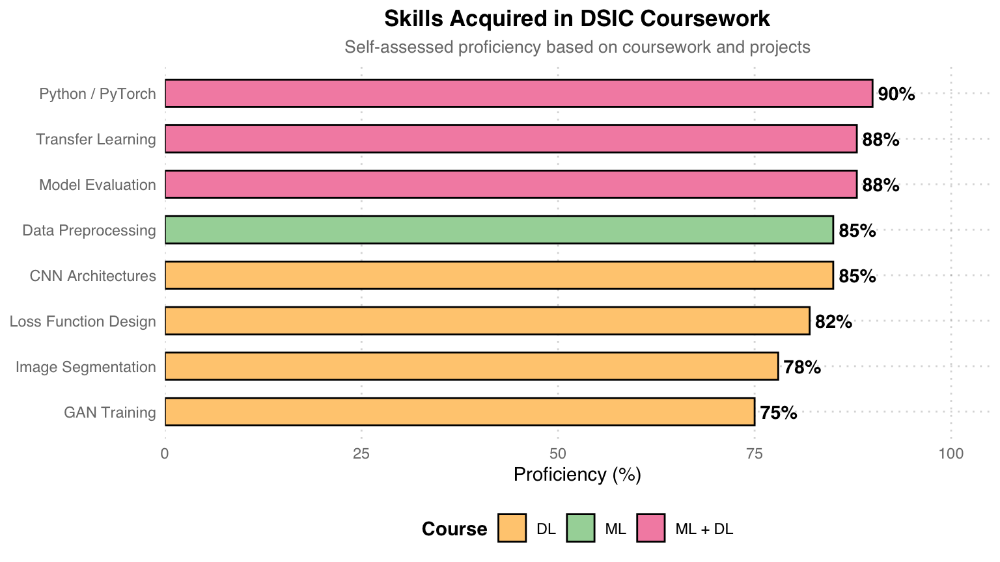

%%{init: {"theme": "base", "themeVariables": {"fontSize": "22px"}, "flowchart": {"nodeSpacing": 20, "rankSpacing": 60, "padding": 30, "useMaxWidth": false}}}%%
flowchart LR
ROOT["DSIC Research Areas "]
subgraph s1 [" "]
direction LR
ML["Machine Learning "] --> ML1["Classification & Regression "]
ML --> ML2["Ensemble Methods "]
ML --> ML3["Feature Engineering "]
end
subgraph s2 [" "]
direction LR
DL["Deep Learning "] --> DL1["CNNs & Transfer Learning "]
DL --> DL2["GANs & Image Generation "]
DL --> DL3["Semantic Segmentation "]
end
subgraph s3 [" "]
direction LR
CV["Computer Vision "] --> CV1["Medical Imaging "]
CV --> CV2["Defect Detection "]
CV --> CV3["Image Reconstruction "]
end
subgraph s4 [" "]
direction LR
OPT["Optimization "] --> OPT1["Loss Function Design "]
OPT --> OPT2["Hyperparameter Tuning "]
end
ROOT --> ML
ROOT --> DL
ROOT --> CV
ROOT --> OPT
style ROOT fill:#E3F2FD,color:#1565C0,stroke:#90CAF9,stroke-width:2px
style ML fill:#E8F5E9,color:#2E7D32,stroke:#A5D6A7,stroke-width:2px
style DL fill:#FFF3E0,color:#E65100,stroke:#FFCC80,stroke-width:2px
style CV fill:#F3E5F5,color:#6A1B9A,stroke:#CE93D8,stroke-width:2px
style OPT fill:#FCE4EC,color:#C62828,stroke:#F48FB1,stroke-width:2px
style ML1 fill:#E8F5E9,color:#2E7D32,stroke:#A5D6A7
style ML2 fill:#E8F5E9,color:#2E7D32,stroke:#A5D6A7
style ML3 fill:#E8F5E9,color:#2E7D32,stroke:#A5D6A7
style DL1 fill:#FFF3E0,color:#E65100,stroke:#FFCC80
style DL2 fill:#FFF3E0,color:#E65100,stroke:#FFCC80
style DL3 fill:#FFF3E0,color:#E65100,stroke:#FFCC80
style CV1 fill:#F3E5F5,color:#6A1B9A,stroke:#CE93D8
style CV2 fill:#F3E5F5,color:#6A1B9A,stroke:#CE93D8
style CV3 fill:#F3E5F5,color:#6A1B9A,stroke:#CE93D8
style OPT1 fill:#FCE4EC,color:#C62828,stroke:#F48FB1
style OPT2 fill:#FCE4EC,color:#C62828,stroke:#F48FB1
style s1 fill:none,stroke:none
style s2 fill:none,stroke:none
style s3 fill:none,stroke:none
style s4 fill:none,stroke:none
MS of Data Science & Information Computing
國立中興大學 資料科學與資訊計算研究所 · National Chung Hsing University
學歷： 國立中興大學 資料科學與資訊計算研究所 碩士 (Master of Science in Data Science and Information Computing, NCHU)。
About the Program / 研究所簡介
資料科學與資訊計算研究所（Graduate Institute of Data Science and Information Computing）隸屬國立中興大學理學院，成立宗旨在培養兼具資料科學理論基礎與資訊計算實作能力的跨領域人才。課程涵蓋機器學習、深度學習、大數據分析、影像處理、最佳化方法與高效能計算等，強調「從數學到實作」的完整訓練。
The program integrates mathematical foundations with modern computing to train professionals in machine learning, deep learning, computer vision, and big data analytics. Students are equipped to bridge the gap between theoretical models and real-world applications across domains including healthcare, industry, and scientific research.
Research Focus Areas / 研究方向
色碼說明： 綠色 = Machine Learning，橘色 = Deep Learning，紫色 = Computer Vision，粉紅色 = Optimization。以上為課程中涵蓋的主要研究領域。
Skills Acquired / 習得技能

技能來源： 粉色 = ML + DL 兩門課都有訓練到的技能，青色 = 主要來自 ML 課程，橘色 = 主要來自 DL 課程。Python/PyTorch 為兩門課的共同程式語言，Transfer Learning 與 Model Evaluation 也跨課程反覆練習。
Coursework / 課程作品
Machine Learning & Data Science
課程重點： 監督式/非監督式學習、模型評估、特徵工程、資料前處理
Assignments：
- HW1 — Diabetes Prediction： Pima Indians 糖尿病預測。迴歸填補 → 特徵工程 → DNN，從 baseline 74% → 90.04%
- HW2 — US Wildfire Analysis： 188 萬筆野火紀錄。Poisson 迴歸趨勢分析 + MLP 成因分類（45.6%）
- Final — Cervical Cancer Screening： EfficientNet-B7 遷移學習 + Focal Loss，三類別影像分類，平均 86.1%
Key Tools： Python · Keras · scikit-learn · statsmodels · PyTorch (final)
Deep Learning
課程重點： CNN 架構、遷移學習、語意分割、影像生成、自動編碼器
Assignments：
- HW1 — AOI Defect Classification： ResNet-18 遷移學習，6 類工業缺陷分類，96.44% Val Acc
- HW2 — Retinal Vessel Segmentation： U-Net (5-level) + Focal Tversky Loss，DRIVE 資料集，mIoU 0.351
- HW3 — Retinal Image Reconstruction： Convolutional Autoencoder，PSNR 峰值 30.84 dB（Epoch 18）
- HW4 — Western Blot Generation： Conditional GAN（Generator + PatchGAN Discriminator），分析 D/G 訓練動態
Key Tools： Python · PyTorch · torchvision · Apple Silicon (MPS)
Big Data Analysis / 巨量資料分析
課程重點： Kernel Methods 加速、大規模最佳化、分散式機器學習
Assignments：
- Reading — Nyström Method： 論文閱讀 (NIPS 2000)，Gram matrix 低秩近似，O(n³) → O(m²n)
- HW — Kernel Ridge + Nyström： USPS 手寫數字分類，m=128 加速 20 倍，accuracy 99.50%
- Final — Smoothed & Distributed SVM： a9a 資料集，Smoothed Hinge Loss + 分散式梯度聚合（K=5 workers），加速 150 倍
Key Tools： Python · NumPy · scikit-learn · SciPy (L-BFGS-B)
Data Analysis Mathematics / 數據分析數學
課程重點： SVD 理論與應用、矩陣低秩近似、Eckart-Young 定理、手寫辨識
Assignments：
- HW1 — SVD Image Compression： 以照片驗證 Eckart-Young 定理，Monte Carlo 近似 2-norm，PSNR 達 44.7 dB (k=700)
- HW2 — Handwritten Digit Recognition： USPS 資料集，比較 8 種方法（Mean / SVD / HOSVD / SVM / KNN / RF / CNN），CNN 95.76% 最高
Key Tools： Python · NumPy · PyTorch · tensorly · scikit-learn
Project Highlights / 作品亮點
| Course | Project | Highlight |
|---|---|---|
| Machine Learning | Diabetes Prediction | Baseline 74% → 90.04%（+16 pp） |
| Wildfire Analysis | 188 萬筆 · Poisson 趨勢 + MLP 分類 | |
| Cervical Cancer | EfficientNet-B7 + Focal Loss · 86.1% | |
| Deep Learning | AOI Defect Detection | ResNet-50 Fine-tune · 96.4% |
| U-Net Segmentation | Dice 0.91 · 醫學影像語意分割 | |
| AutoEncoder | 影像重建 30.8 dB PSNR | |
| cGAN Blot Removal | 條件式 GAN 去除墨漬 | |
| Big Data | Nyström Approximation | Kernel Ridge 加速 20× |
| Smoothed SVM | Hinge Loss 平滑化 · 梯度法求解 | |
| Distributed SVM | 分散式計算加速 150× | |
| Data Analysis Math | SVD Image Compression | Eckart-Young 驗證 · PSNR 44.7 dB |
| Digit Recognition (8 models) | CNN 95.76% · KNN 最佳性價比 |
學習歷程： 從 Data Analysis Math 的數學基礎（SVD、矩陣近似）→ ML 課程的經典模型（迴歸、DNN、遷移學習）→ DL 課程的進階架構（U-Net、AutoEncoder、GAN）→ Big Data 的大規模加速方法（Nyström、Smoothed SVM、分散式計算）。每個 project 都涵蓋完整的 pipeline — 從資料前處理、模型設計、訓練、到結果分析與視覺化。